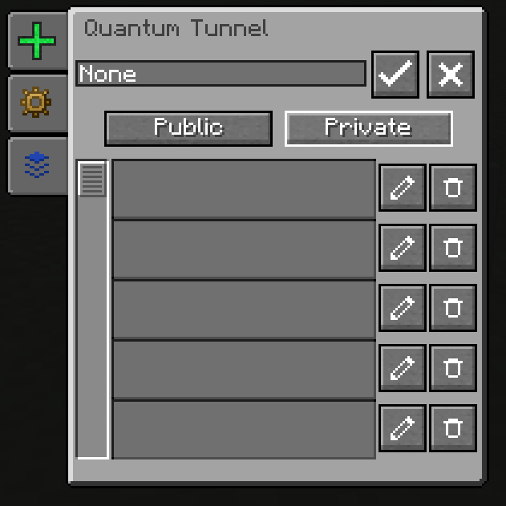
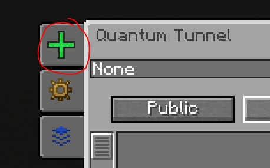
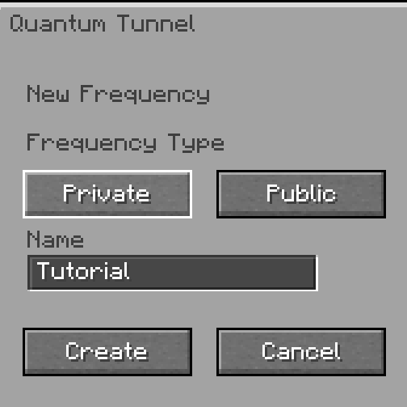
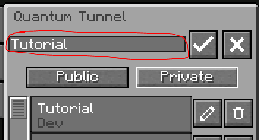
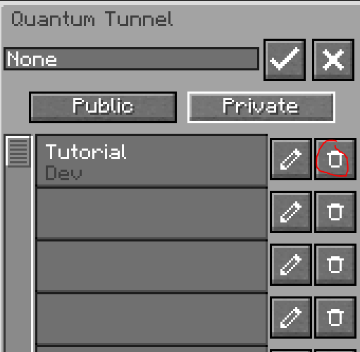
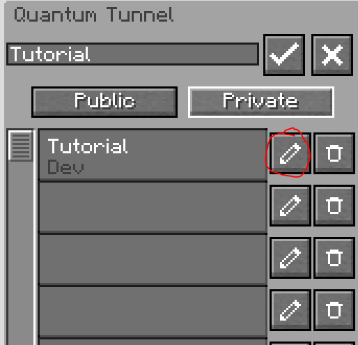
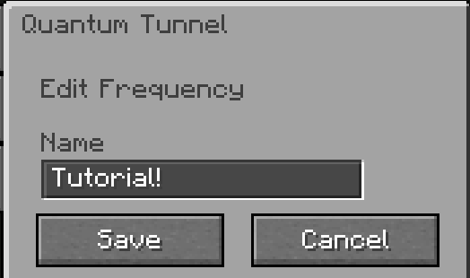
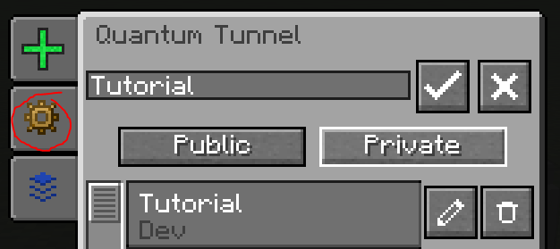

Quantum Tunnel
Instant Transport
The quantum tunnel transports energy, fluids, gases, and items between two points over any distance, instantaneously. Similar to the Tesseract from Thermal Expansion.
What the tunnel can transport
| Type | Sub-types |
|---|---|
| Electricity | Single voltage/packet type at a time per frequency |
| Fluids | Single fluid type at a time per frequency |
| Gases | Single gas type at a time per frequency |
| Items | All types |
Grid Independence
The properties of the sending cable (resistance, voltage) do not affect the receiving cable. Each side is independent.
Frequencies
Each tunnel is linked to a frequency. All tunnels sharing the same frequency exchange the same data. There are two types:
| Type | Visibility | Modification |
|---|---|---|
| Private | Only you | Only you |
| Public | All players | Creator only |

Creating a frequency
- Open the tunnel interface
- Click on New Frequency
- Name it and choose the type (private/public)
- Click on Create


Activating a frequency
- Click on the frequency in the list to select it
- Press ✓ to link the tunnel to this frequency
- Press ✗ to deactivate


Configuring Input/Output
Click on I/O Config to define the role of each block face (input, output, or inactive). Click again to hide the selector.


Monitoring Traffic
Hover over the Buffer tab in the interface to see the quantities currently being transported on the frequency.

Loaded Chunk Required
A quantum tunnel must be in a loaded chunk to function. Use a Chunk Loader if necessary.